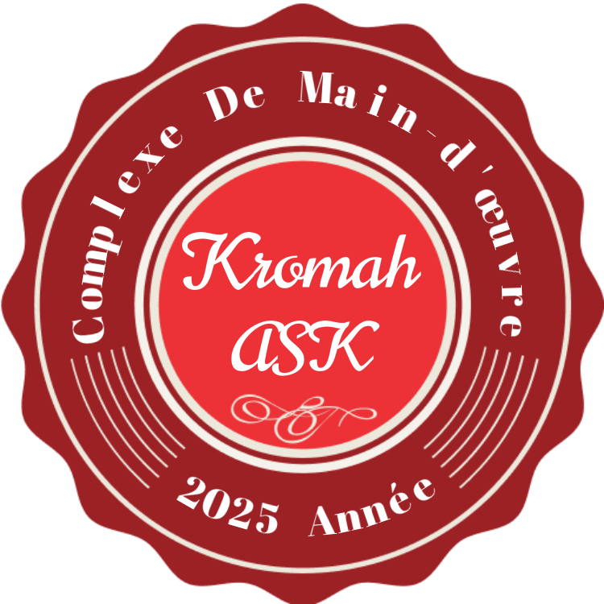

Nom complet
Aboubacar Sidiki Kourouma
Adresse
Téléphone: +224 624 70 85 72
Email: sdkroma@gmail
Description
Etudiant en cour de validation de la licence en sciences économiques,
concentration en économie et finance.
A propos de moi:
Je suis un étudiant passionné au developpement web,
motivé à mettre à votre disposition mon savoir-faire en developpement web,
en analyse financière, en analyse et évaluation de projet,
performant dans l'utilisation des outils Microsoft.
Compétences
Compétences académiques
- Analyse économique: (analyse des données économiques
sur le chômage, l'inflation ... avec les instruments économiques)
- Econométrie: maîtrise parfaite de la regression lineaire pour
évaluer les données économiques par les méthodes statistiques et
mathématiques
Compétences professionelle
- Excel (Maîtrise des formules complexes, Tableau croisé
dynamique, Analyse des données)
- HTMT/CSS (Création des sites web) en cour d'amélioration
- Access
Expériences de vie
Projet Personnel
- Création de mon CV avec HTML/CSS
- Mise en place d'une base de donnée avec Access
pour la gestion d'une Librairie
- Initiative d'une formation éducative
portant sur "Comment reussir son examen"
- Analyse de l'évolution du
taux de chômage des jeunes diplômés en Guinée.
Centre d'interêt
- Sport(Football, Fitness)
- Lecture des livres (économiques, journaux)
- Recherche des Problèmes économiques pour l'analyser